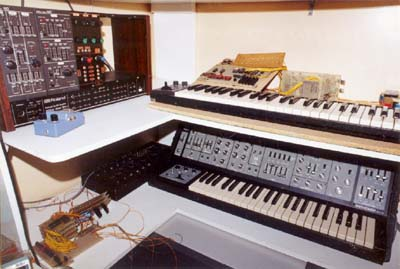

|

On the top shelf is the Roland System 100M and it's (much modified) keyboard. On the bottom shelf is a four channel TOS based digital oscillator (the circuit boards), the mixer (black box) and the Roland SH5. After coming to grief in the early eighties, the keyboard from the 100M was stripped, and had a digital scanner of my own design wired to it. It had gate outputs, a clock input and a D to A output. A Z80 based single board computer supplied the smarts. The computer is the board at an angle at the left end of the keyboard. It is in fact the protoype of the second generation of a popular Australian "learning" computer called the TEC-1 (Talking Electronics Computer -1). Apart from just scanning the keyboard, the computer also ran as a sequencer, taking its timing from the clock input, usually driven by a Dr Rhythm. A numeric keypad allowed the selection of different sequences on the fly, while the keyboard controlled the base pitch. All sequences and the program itself (hand assembled) were stored in a battery backed up RAM while in development, with the intention of transferring it to ROM on completion. Alas, a crash and the resulting stack overflow trashed the lot, when the read/write switch on the RAM was accidently left switched to write. I never did put it back together. Only now, years later, have I connected the keyboard and its scanning circuitry to a PC with the idea of getting it going again, but this time with a somewhat less volatile hard disk to store the the program! Nonetheless the first 386 era hard drive I tried managed to erase itself three or so times before I upgraded to a more modern unit. The four channel TOS based digital oscillator was originally made to connect to my Vic 20, which I used as a sequencer prior to the Z80 based machine. The philosophy behind the design is not unlike that used in some organs in the late '70s, or even that used in polysynths. Instead of having the top octave synthesizer outputs each divided down to provide an output for each note on the keyboard, then having a to resolve how to provide envelope generation for each individual key economically, for each note of polyphony required, a multiplexer picks off the required top octave pitch, feeding it to a divider (4024 ripple counter). A second multiplexer picks off the required octave, feeding it to the filtering and envelope circuitry. Article, art & design copyright 1999 by Ken Stone
|